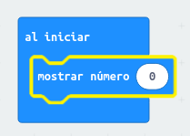
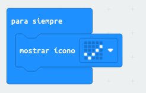
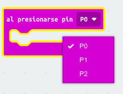
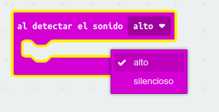
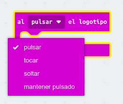
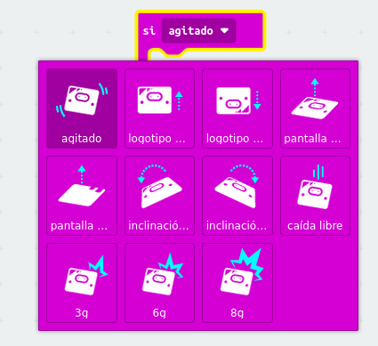

Tenemos tres opciones posibles para iniciar un programa con Micro:BIT:
Al iniciar
El programa se ejecutará cuando se inicie el programa. Por ejemplo, el siguiente código mostrará el número 0 cuando se inicie el programa

Puedes probar que funciona correctamente pulsando sobre el triángulo verde
Para siempre
Es un bucle infinito. El programa se ejecutará hasta que se desconecte la tarjeta. En este caso vamos a probar a visualizar el siguiente icono de forma permanente:

Bloques al presionar
Tenemos varios opciones:
- Al presionar el botón A, el B o ambos

- Al presionar el pin 0,1,2

- Al detectar el sonido alto o en silencio(micro:bit v2)

- Al pulsar, tocar, soltar o mantener pulsado el logotipo (micro:bit v2)

Bloques si
Podemos elegir que el programa se ejecute cuando ocurra cualquiera de los siguientes eventos:
